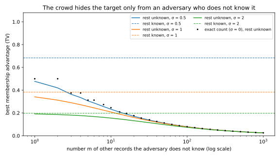

9 Threat models and privacy games
A hospital trains a model on patient records and offers it to doctors through a web service. Is the model “private”? The question has no answer until you say against whom. The attacker may read only labels or hold the weights, know the other patients or only the population, and slip crafted records into the training data. It may want one person’s membership, their diagnosis, or the whole table. Without a threat model that answers these questions, “the model leaks” and “the model is safe” are claims nobody can test.
Once the threat model is fixed, an attack can be written down as a game, as cryptographers do for encryption. A challenger trains the model with a hidden secret, such as whether one patient’s record was used. It shows the adversary what the threat model allows, and the adversary guesses the secret. That is the one idea of this chapter: an attack is a guess about a hidden secret, made from a view that the threat model fixes. When the secret is one bit, an attack is a test between two hypotheses. So the limits that Hypothesis testing puts on every test, such as the total variation bound, become ceilings that no attack can break.
The running example is a count of people with a sensitive condition, published with standard normal noise. An adversary wants to know whether one person with the condition is in the dataset. If it knows the other 100 records, the best attack flags members at a rate 0.3829 higher than it flags non-members. If it does not know them, the best attack manages only 0.0779, because their unknown count varies far more than the 1 that the target adds. This gap between the uninformed and the best-informed adversary runs through every later chapter of this part.
| Symbol | Meaning |
|---|---|
| \(b\), \(b'\); \(\pi_1\), \(\pi_0\) | the hidden bit (1: the target is in the training data) and the guess; the priors of \(b = 1\) and \(b = 0\) |
| \(V\); \(P\), \(Q\); \(p\), \(q\) | the view; its distributions when \(b = 0\) and \(b = 1\); the probability of one view under each |
| \(\mathrm{TPR}\), \(\mathrm{FPR}\), \(\mathrm{Adv}\) | true and false positive rates, advantage |
| \(\mathcal T\), \(\theta\), \(D\), \(\mathcal D\) | training algorithm, model, dataset, population |
| \(\mathrm{TV}\), \(E_\gamma\), \(T(P, Q)\) | total variation, hockey-stick divergence, trade-off function |
| \(S\) | side information |
| \(\omega\); \(\bar P\), \(\bar Q\) | what the adversary may not know; the views averaged over it |
| \(\Phi\) | the standard normal distribution function |
9.1 Two-world games
Before you can compare threat models, you need a way to score a guess. This section scores the simplest game, whose secret is one bit, and shows why the score is the advantage, defined below, and not the accuracy.
Definition 9.1 (Two-world game) A challenger flips a hidden bit \(b\), equal to 1 with probability \(\pi_1\) and to 0 with probability \(\pi_0 = 1 - \pi_1\). In the world \(b = 1\) the target’s record is in the training data (“member”), and in the world \(b = 0\) it is not. The adversary receives its view \(V\), which is everything it gets to look at (from Section 9.2 on, what it knew beforehand is written separately as \(S\)). The view has distribution \(P\) when \(b = 0\) and \(Q\) when \(b = 1\). The adversary outputs a guess \(b'\), where 1 means “member”. Its true positive rate (TPR) is the fraction of members it flags, and its false positive rate (FPR) is the fraction of non-members it flags: \[\mathrm{TPR} = \Pr[b' = 1 \mid b = 1], \qquad \mathrm{FPR} = \Pr[b' = 1 \mid b = 0]. \tag{9.1}\] Its advantage is how much more often it says “member” to members than to non-members, \[\mathrm{Adv} = \mathrm{TPR} - \mathrm{FPR}. \tag{9.2}\]
The adversary wins a game when its guess matches the hidden bit. Play 1,000 games with an attack whose TPR is 0.6 and FPR is 0.2. Table 9.2 counts the wins for a fair bit, \(\pi_1 = \frac12\), and for a bit that is 1 only one time in ten.
| Prior \(\pi_1\) | Games with \(b = 1\) | Wins there (\(b' = 1\), rate TPR) | Games with \(b = 0\) | Wins there (\(b' = 0\), rate \(1 - \mathrm{FPR}\)) | Wins in total |
|---|---|---|---|---|---|
| \(\frac12\) | 500 | \(0.6 \times 500 = 300\) | 500 | \(0.8 \times 500 = 400\) | 700, so \(\Pr[b' = b] = 0.7\) |
| 0.1 | 100 | \(0.6 \times 100 = 60\) | 900 | \(0.8 \times 900 = 720\) | 780, so \(\Pr[b' = b] = 0.78\) |
The next result does the same count in general.
Proposition 9.1 (Winning probability) In a two-world game, the probability that the guess is right, over the challenger’s bit and everything else that is random, is \[\Pr[b' = b] = \pi_1\,\mathrm{TPR} + \pi_0\,(1 - \mathrm{FPR}). \tag{9.3}\] With a fair bit, \(\pi_1 = \frac12\), it equals \(\frac12 + \frac12\mathrm{Adv}\).
Proof. The plan is to split the games by the world the challenger chose, count the wins in each world, and add.
- Split the win into the two worlds. A game is won when the bit is 1 and the guess is 1, or when the bit is 0 and the guess is 0. A game has only one bit, so the two cannot happen together, and the probability of one or the other is the sum: \[\Pr[b' = b] = \Pr[b = 1 \text{ and } b' = 1] + \Pr[b = 0 \text{ and } b' = 0]. \tag{9.4}\]
- The member world. A joint probability is the prior times the conditional probability, so the first term is \(\Pr[b = 1]\Pr[b' = 1 \mid b = 1]\), which is \(\pi_1\mathrm{TPR}\).
- The other world. In the same way the second term is \(\pi_0\Pr[b' = 0 \mid b = 0]\). The guess is either 0 or 1, so \(\Pr[b' = 0 \mid b = 0]\) is \(1 - \mathrm{FPR}\), and adding the two terms gives Equation 9.3.
- The fair bit. With \(\pi_0 = \pi_1 = \frac12\) the right side is \(\frac12\mathrm{TPR} + \frac12 - \frac12\mathrm{FPR}\), which is \(\frac12 + \frac12\mathrm{Adv}\).
An attack that ignores its view, such as a coin flip, says 1 equally often in both worlds, so its advantage is 0 and it wins half the games. A perfect attack has advantage 1 and wins every game. In between, the fair-bit form reads \(\mathrm{Adv} = 2\Pr[b' = b] - 1\), twice the amount by which the attack beats a coin flip.
Unlike the win rate, the advantage does not depend on the prior, because each of the two rates is measured inside one world. In the second row of Table 9.2, always saying 0 already wins 900 games of 1,000, so the attack’s 780 wins look worse than knowing nothing. Yet the attack learns from its view exactly what it learns in the first row, and its advantage of 0.4 says so. Because the advantage measures only what the view reveals, every two-world game in this part is scored by it.
Example 9.1 A data team releases \(Y = c + b + Z\), where \(c = 50\) is the number of people with the condition among the 100 other records and \(Z\) is standard normal noise. The target has the condition, so it adds 1 to the count exactly when it is a member, \(b = 1\). The adversary knows the other records, so it knows \(c\). It says “member” when \(Y > 50.5\), halfway between the two possible centres. Write \(\Phi\) for the standard normal cumulative distribution function (CDF). A member’s count, centred at 51, lands above 50.5 when \(Z > -\frac12\), which by the symmetry of the normal curve has probability \(\Phi(\frac12) = 0.6915\), the TPR. A non-member’s count, centred at 50, needs \(Z > \frac12\), with probability \(1 - \Phi(\frac12) = 0.3085\), the FPR. The advantage is \(2\Phi(\frac12) - 1 = 0.3829\), and by Proposition 9.1 the attack wins with probability 0.6915. Over 200,000 simulated games in each world, it scores TPR 0.6901 and FPR 0.3092, an advantage of 0.3809 and a winning probability of 0.6905.
9.2 Threat models
A reported number such as “membership advantage 0.2” means nothing until you know what the attacker was assumed to see, know and do. This section lists what a threat model must specify, then proves the one order that always holds: more access never makes an adversary weaker.
Definition 9.2 (Threat model) A threat model answers five questions.
- Goal: what is the secret? It can be whether a record was in the training data (membership), a sensitive field of a known record (attribute), the records themselves (reconstruction), or a statistic of the whole dataset (property).
- Access: what does the adversary observe? From least to most, it sees the model’s decisions on inputs it chooses (label-only), the model’s scores on them, such as confidences or losses (black-box), the parameters \(\theta\) (white-box), or everything the training process exposed to it, such as per-step gradients (the transcript).
- Behaviour: does it follow the rules? An honest-but-curious adversary follows the protocol and only analyses what it sees. A malicious adversary may deviate, for example by inserting crafted records into the training data (poisoning).
- Trust: who sees the raw data? In the central model a trusted curator holds the data, and the adversary sees only what is released. In the local model nobody is trusted, and the adversary may be the party that collects the data. Distributed settings, where many parties each hold a slice, sit in between, because each party trusts itself with its own slice but nobody with the rest.
- Side information: what does it know already? It may know the population, a public dataset, some or all of the other records, or the target’s non-sensitive fields.
Label-only and black-box access describe a model behind an application programming interface (API). White-box access describes released weights, and the transcript describes a server that sees each client’s updates, the setting of Gradient inversion.
Trust decides who the adversary is, not how strong it is: in the local model, protection must be applied before data leave the user. Side information is the hardest axis to bound, because the defender rarely knows what the adversary knows. A guarantee that survives the strongest assumption, “the adversary knows every record except the target’s”, survives every weaker one, so that is the assumption to design for (Section 9.5).
Of the five axes, only access has a natural order: from the weights the adversary can compute any score, and from a score the label. Each step down that chain loses information, because whatever the adversary computes from its view, it could have computed itself. Write \(\mathrm{Adv}^*(V) = \max_{\mathcal A}\mathrm{Adv}(\mathcal A)\) for the best advantage of any attack \(\mathcal A\) whose input is the view \(V\).
Lemma 9.1 (Processing the view cannot help) Let \(V' = h(V, R)\) for a function \(h\) that the adversary knows and randomness \(R\) that it can draw itself, independent of \(b\) and \(V\). Then every attack on \(V'\) has the same TPR and FPR as some attack on \(V\). So \(\mathrm{Adv}^*(V') \le \mathrm{Adv}^*(V)\), and the best TPR at every FPR from \(V'\) is at most the best from \(V\).
This is the data-processing inequality, Theorem 3.5, seen from the attacker’s side. The attack on \(V\) that draws \(R\), computes \(h(V, R)\) and runs an attack \(\mathcal A'\) on the result gets an input distributed as \(V'\) in each world, so it has the TPR and FPR of \(\mathcal A'\). A service that adds noise to the scores it returns can therefore only lower the best advantage.
Proposition 9.2 (More access never weakens the adversary) For the same model and the same side information \(S\), the best advantages of attacks that see the labels, the scores, the parameters and the training transcript are ordered: \[\mathrm{Adv}^*(\text{labels}, S) \le \mathrm{Adv}^*(\text{scores}, S) \le \mathrm{Adv}^*(\theta, S) \le \mathrm{Adv}^*(\text{transcript}, S). \tag{9.5}\] The same chain holds for the best TPR at every FPR. More side information never lowers the best advantage, \(\mathrm{Adv}^*(V) \le \mathrm{Adv}^*(V, S)\), and neither does allowing malicious behaviour.
Proof. The plan is to compute each view from the next, so that Lemma 9.1 applies at every link.
- Each view can be computed from the next. A label is a function of the scores, such as the class with the largest score. A score on a query \(x\) is a function of \(\theta\) and \(x\), and the adversary chose \(x\) itself. The final \(\theta\) is the last entry of the transcript.
- The chain. Each view on the left of Equation 9.5 is \(h(V, R)\) for the view \(V\) to its right, so Lemma 9.1 orders their best advantages and their best TPR at every FPR.
- Side information. The view \(V\) is what you get from the pair \((V, S)\) by forgetting \(S\), so Lemma 9.1 applies again.
- Behaviour. This step needs no processing, because a malicious adversary changes the data, not the view. An honest-but-curious adversary is a malicious one that chooses not to deviate, and a maximum over more strategies is at least as large.
The chain compares the best attacks at each level, not the attacks people actually run. In the example below, the gap between two attacks at one access level is larger than the gap between levels.
Example 9.2 The noisy count has no weights, so take the simplest model that has them, a centroid anomaly detector: the mean \(\theta = \frac1n\sum_ix_i\) of \(n = 100\) records \(x_i \sim \mathcal N(0, I_d)\) with \(d = 50\) features. A point \(x\) is flagged when its anomaly score \(\|x - \theta\|^2\) exceeds \(d\), the typical squared distance from the centre. The adversary holds a target \(z\), which is one of the \(n\) records if \(b = 1\) and a fresh draw if \(b = 0\).
With the weights (white-box), the adversary knows \(\theta\), and it asks how much more likely this \(\theta\) is in the member world than in the other. Write \(q(\theta \mid z)\) and \(p(\theta \mid z)\) for the density of \(\theta\) given the target \(z\) in those two worlds. By the Neyman–Pearson lemma of Hypothesis testing, no attack catches more members at a given false positive rate than one that thresholds this likelihood ratio. If \(z\) was used, then \(\theta = (z + W)/n\), where \(W \sim \mathcal N(0, (n - 1)I_d)\) is the sum of the other records. If it was not, then \(\theta \sim \mathcal N(0, I_d/n)\). Expanding the squares in the two Gaussian densities gives the log of the likelihood ratio (Section G.7 does it step by step): \[\ln\frac{q(\theta \mid z)}{p(\theta \mid z)} = \frac{n}{2(n - 1)}\big(2\langle z, \theta\rangle - \|\theta\|^2\big) - \frac{\|z\|^2}{2(n - 1)} + \text{const}. \tag{9.6}\] The constant depends only on \(n\) and \(d\). The bracket grows when \(\theta\) points towards \(z\), which is what training on \(z\) does.
Black-box access gives only the score, \(\|z - \theta\|^2 = \|z\|^2 - \big(2\langle z, \theta\rangle - \|\theta\|^2\big)\). The adversary knows \(z\), so the calibrated score \(\|z\|^2 - \|z - \theta\|^2\) gives back exactly the bracket. The log-ratio adds only the term \(-\|z\|^2/(2(n - 1))\), which shifts the best threshold slightly from one target to the next, so thresholding the calibrated score is almost the likelihood-ratio test. A simpler black-box attack says “member” when the raw score, the target’s loss, is low, and targets far from the mean confuse it, because they score high whether or not they were used. With only the flag (label-only), the adversary says “member” when \(z\) is not flagged. Table 9.3 reports the advantage of each attack at its best threshold, over 100,000 games in each world.
The best attacks at the label-only, black-box and white-box levels give \(0.0400 \le 0.2789 \le 0.2789\), so the chain holds, and the two best attacks agree to four decimals. But the large gap lies inside the black-box level. Calibrating each target against its own distance from the mean, \(\|z\|^2\), multiplies the advantage by about seven, and this is the idea behind the attacks of Membership inference. Figure 9.1 shows the best advantage climbing from 0.0326 at \(d = 1\) to 0.7407 at \(d = 500\), because with more parameters per record one record moves the model in more directions.
| View | Attack | Best advantage \(\mathrm{TPR} - \mathrm{FPR}\) |
|---|---|---|
| White-box | likelihood ratio of \(\theta\) | 0.2789 |
| Black-box | calibrated score \(\|z\|^2 - \|z - \theta\|^2\) | 0.2789 |
| Black-box | raw loss \(-\|z - \theta\|^2\) | 0.0407 |
| Label-only | not flagged, threshold \(d\) | 0.0400 |

9.3 Privacy games
One name, such as “membership inference”, covers attacks with different assumptions and scores, so Salem et al. (2023) write each attack as a game. This section defines the games of this part, then finds the best guess for a rare secret bit and for many bits behind one aggregate.
Definition 9.3 (Privacy game) A privacy game has four steps. The challenger draws a secret \(s\) from a known distribution, together with a dataset \(D\) whose distribution may depend on \(s\). It trains \(\theta = \mathcal T(D)\) and gives the adversary the view \(V\) that the threat model allows, along with the side information \(S\). The adversary outputs a guess \(s'\) and earns a gain \(g(s, s')\), usually \(\mathbf 1[s' = s]\). The attack is compared with a baseline, the best expected gain of a guess made from \(S\) alone, without looking at \(V\).
Figure 9.2 draws the membership game, and Table 9.4 lists the others. Every row can be played at every access level, as in “label-only membership”.
| Game | Secret \(s\) | Data in the two worlds | Gain | Baseline |
|---|---|---|---|---|
| Membership | bit \(b\) | \(b = 1\): target \(z\) drawn from \(D\); \(b = 0\): \(z\) fresh from \(\mathcal D\) | \(\mathbf 1[b' = b]\) | \(\frac12\) |
| Attribute | field \(a\) of a known member \(z = (u, a)\), with other fields \(u\) | \(z \in D\); adversary knows \(u\) | \(\mathbf 1[a' = a]\) | guess of \(a\) from \(u\) and \(\mathcal D\), or the attack on non-members |
| Reconstruction | the records of \(D\) | \(D\) drawn from \(\mathcal D\) | fraction recovered | guessing from \(\mathcal D\) |
| Distinguishing | bit \(b\) | adversary picks two datasets \(D_0, D_1\) that differ in one record; challenger trains on \(D_b\) | \(\mathbf 1[b' = b]\) | \(\frac12\) |
| Property | bit \(b\) | \(D\) drawn from population \(\mathcal D_{t_0}\) or \(\mathcal D_{t_1}\), which differ in a statistic \(t\) | \(\mathbf 1[b' = b]\) | \(\frac12\) |

Say the secret bit is rare, 1 with prior \(\pi_1 < \frac12\). Then the safe default is to guess 0, which already wins with probability \(\pi_0\). The view should overturn that default only where it is strong enough evidence to outweigh the prior odds \(\gamma = \pi_0/\pi_1\) against a 1. That is, the view must be more than \(\gamma\) times as likely when the bit is 1 as when it is 0. The hockey-stick divergence of Divergences measures how much those views add to the default’s wins. It is the total by which the probability \(q\) of a view when the bit is 1 exceeds \(\gamma\) times its probability \(p\) when the bit is 0 (for continuous views, sums become integrals of densities): \[E_\gamma(Q\|P) = \sum_x\max\big(q(x) - \gamma p(x),\, 0\big). \tag{9.7}\] At \(\gamma = 1\) it is the total variation (TV) distance, half the total absolute difference between the two probability tables: \[\mathrm{TV}(P, Q) = \tfrac12\sum_x|p(x) - q(x)|. \tag{9.8}\]
Proposition 9.3 (Bayes-optimal guess) In a two-world game with prior \(\pi_1 \le \frac12\) on \(b = 1\), so that guessing 0 is the default, write \(\gamma = \pi_0/\pi_1\). The best attack wins with probability \[\max_{\mathcal A}\Pr[b' = b] = \pi_0 + \pi_1\,E_\gamma(Q\|P), \tag{9.9}\] and it says 1 exactly on the views \(x\) where \(q(x) > \gamma p(x)\).
This is property 4 of Proposition 3.5, with the member world \(Q\) as the hypothesis of small prior. Its proof writes the win of an attack that says 1 on a set \(A\) as \(\pi_0 + \pi_1\big(Q(A) - \gamma P(A)\big)\). By Lemma 3.4, the bracket is largest, and equal to \(E_\gamma(Q\|P)\), when \(A\) holds the views where \(q > \gamma p\). The same lemma shows that a randomized attack does no better.
The first term of Equation 9.9 is the baseline of always guessing 0, and the second is everything the view adds. For a fair bit, \(\gamma = 1\) and \(E_1\) is the TV distance, so the best win probability is \(\frac12 + \frac12\mathrm{TV}\). Matching it with \(\frac12 + \frac12\mathrm{Adv}\) from Proposition 9.1 makes the best advantage the TV distance, a ceiling that Section 9.4 extends.
The reconstruction game has many secret bits, not one. Its simplest case shows how little a single aggregate reveals about each record.
Proposition 9.4 (Reconstruction from one exact count) Let the secret be \(m\) independent uniform bits \(x_1, \dots, x_m\), and let the release be their sum \(K\). The best reconstruction recovers in expectation the fraction of the bits below, whose two forms agree because \(\max(k, m - k) = \frac m2 + |k - \frac m2|\): \[\frac{\mathbb E[\max(K, m - K)]}{m} = \frac12 + \frac{\mathbb E\big[|K - \frac m2|\big]}{m}. \tag{9.10}\] For large \(m\) this is close to \(\frac12 + 1/\sqrt{2\pi m}\).
Proof. The plan is to find what the count says about each bit, guess each bit from that, and then average over the count.
- What the count says about each bit. Given \(K = k\), every arrangement of \(k\) ones among \(m\) places is equally likely, so each bit is 1 with probability \(k/m\).
- The best guess for each bit. The gain is the fraction of bits guessed right, so each bit can be guessed separately. The best guess is 1 when \(k/m > \frac12\) and 0 otherwise, so every bit gets the majority value, and the expected number right is \(\max(k, m - k)\).
- Average over the count. The count \(K\) is \(\mathrm{Bin}(m, \frac12)\), and averaging \(\max(K, m - K)/m\) over it gives the fraction in the statement.
- How large the gain is. By the central limit theorem, \(K - \frac m2\) is approximately normal with standard deviation \(\sqrt m/2\). The average distance of a normal variable from its mean is its standard deviation times \(\sqrt{2/\pi}\), and dividing \(\frac{\sqrt m}{2}\sqrt{2/\pi}\) by \(m\) gives \(1/\sqrt{2\pi m}\). Section E.2 computes the fraction exactly, as \(\frac12 + \frac12\binom{2j}{j}4^{-j}\) with \(j = \lfloor m/2\rfloor\), and proves the approximation without the central limit theorem.
So a model that lets an attacker guess a rare diagnosis “with 90% accuracy” reveals nothing if 90% of people do not have that diagnosis. Many aggregates are a different matter. Reconstruction attacks shows how noisy counts over random subsets of the records, a few times as many as there are bits, give away almost every bit.
Attribute inference has two baselines in Table 9.4. Only the attack’s success on non-members asks whether the model helps because this person was in the training data, which is what a breach of their privacy means (Attribute inference and model inversion).
Example 9.3 Take the noisy count \(Y = c + b + Z\) of Example 9.1, with the rest of the count \(c\) known, and attack it in three games.
In the membership game, the count is \(\mathcal N(c, 1)\) without the target and \(\mathcal N(c + 1, 1)\) with it, and by Example 9.1 the best attack wins with probability \(\Phi(\frac12) = 0.6915\).
In the attribute game with a fair prior, the target is known to be in \(D\), and the secret is whether it has the condition. The count is \(c + 1 + Z\) if it does and \(c + Z\) if not, the same two distributions as before, so the best guess is again right with probability 0.6915 (0.6925 in 200,000 simulated games). Now make the condition rare, with prior \(\pi_1 = 0.1\), so that always guessing “no” wins with probability 0.9. By Proposition 9.3 the release overturns that guess only where the likelihood ratio exceeds \(\gamma = 9\). The ratio of the two normal densities at \(y\) is \(e^{-(y - c - 1)^2/2}/e^{-(y - c)^2/2} = e^{(y - c) - 1/2}\), so this happens where \(y > c + \frac12 + \ln 9\). A normal variable with mean \(\mu\) and variance 1 exceeds \(a\) with probability \(\Phi(\mu - a)\). So the world with the condition puts mass \(\Phi(\frac12 - \ln 9)\) there and the other world mass \(\Phi(-\frac12 - \ln 9)\), and \[E_9(Q\|P) = \Phi(\tfrac12 - \ln 9) - 9\,\Phi(-\tfrac12 - \ln 9) = 0.0134. \tag{9.11}\] The best accuracy is \(0.9 + 0.1 \times 0.0134 = 0.9013\) (simulated: 0.9028). The same release that lifts a fair guess from 0.5 to 0.69 lifts this one by about a tenth of a percentage point, because the likelihood ratio rarely overturns 9-to-1 odds.
In the reconstruction game, release the exact count of \(m\) uniform bits instead. By Proposition 9.4 the best reconstruction recovers a fraction 0.6230 of the bits for \(m = 10\), 0.5398 for \(m = 100\) and 0.5126 for \(m = 1000\), close to the approximation \(\frac12 + 1/\sqrt{2\pi m}\) (0.6262, 0.5399 and 0.5126).
9.4 Advantage, total variation and the trade-off curve
A two-world game is a test of the hypothesis “not a member” (view distributed as \(P\)) against “member” (view distributed as \(Q\)). So what Hypothesis testing proved about tests gives ceilings on the advantage and on the whole receiver operating characteristic (ROC) curve, and a warning about which point of that curve to report.
The first ceiling is the TV distance, which Proposition 9.3 already gave for a fair bit. The second bounds the attack’s TPR at every false positive rate, not just where TPR − FPR is largest. It comes from the trade-off function \(T(P, Q)\) of Hypothesis testing. For each false positive rate, \(T(P, Q)(\mathrm{FPR})\) is the smallest fraction of members that any attack with that false positive rate must miss, so an attack can catch at most the rest.
Proposition 9.5 (Ceilings on every attack) For every attack in a two-world game with views \(P\) and \(Q\), \[\mathrm{Adv} \le \mathrm{TV}(P, Q), \qquad \Pr[b' = b] \le \tfrac12 + \tfrac12\mathrm{TV}(P, Q), \tag{9.12}\] where the second bound is for a fair bit, and \[\mathrm{TPR} \le 1 - T(P, Q)(\mathrm{FPR}). \tag{9.13}\] All three bounds are attained by likelihood-ratio attacks, which flag first the views with the largest likelihood ratio \(q/p\).
Proof.
- The attack is a test. An attack says “member”, rejecting the hypothesis \(P\), with probability \(\phi(V)\). Its type I error is its FPR, and its type II error is \(1 - \mathrm{TPR}\).
- The advantage ceiling. Every test has \(\mathrm{TPR} - \mathrm{FPR}\) at most \(\mathrm{TV}(P, Q)\), with equality for the test that says “member” exactly where \(q > p\) (Hypothesis testing). That gives the first bound of Equation 9.12, and Proposition 9.1 turns it into the second.
- The curve ceiling. By the definition of the trade-off function, no attack with false positive rate FPR misses fewer than \(T(P, Q)(\mathrm{FPR})\) of the members, so \(1 - \mathrm{TPR} \ge T(P, Q)(\mathrm{FPR})\). By the Neyman–Pearson lemma, the attack that attains it flags views in decreasing order of the likelihood ratio \(q/p\) until its false positive rate reaches the chosen value, flagging the last views only at random if that is needed to hit it exactly.
The warning needs one more quantity, which answers the question a flagged person cares about: when the attack says “member”, how likely is that to be true? The precision is the members’ share of everyone the attack flags.
Proposition 9.6 (Precision) An attack with rates TPR and FPR, in a game with prior \(\pi_1\), is right when it says “member” with probability \[\Pr[b = 1 \mid b' = 1] = \frac{\pi_1\,\mathrm{TPR}}{\pi_1\,\mathrm{TPR} + \pi_0\,\mathrm{FPR}}. \tag{9.14}\]
Proof.
- A conditional probability is a ratio. The precision is the probability that a target is a member and flagged, \(\pi_1\mathrm{TPR}\) as in step 2 of the proof of Proposition 9.1, divided by the probability that it is flagged.
- The denominator. A target is flagged either as a member, with probability \(\pi_1\mathrm{TPR}\), or as a non-member, with probability \(\pi_0\mathrm{FPR}\), and these exclude each other, so the denominator is their sum.
The advantage is only one point of the ROC curve, the plot of an attack’s TPR against its FPR as its threshold varies. It is the largest height of that curve above the diagonal, so it says nothing about the low false-positive end, where an attack identifies people with confidence. An attack that flags 1% of members with no false alarms has an advantage of only about 0.01, yet it identifies those members with certainty. So Carlini et al. (2022) argue for reporting membership attacks by their TPR at a low FPR, such as \(10^{-3}\), on ROC curves with log axes. The rest of this part does so. Precision points the same way when members are rare (Jayaraman et al. 2021), as Example 9.4 shows.
Both ceilings depend only on \(P\) and \(Q\), so they also bound attacks nobody has invented yet.
Example 9.4 In the noisy count of Example 9.1, \(P = \mathcal N(50, 1)\) and \(Q = \mathcal N(51, 1)\). The attack there says “member” exactly where \(q > p\), so by Proposition 9.5 its advantage 0.3829 is the TV distance, and no attack does better.
Now hold the false positive rate at \(10^{-3}\), so that the threshold \(\tau\) must rise until only one non-member in a thousand exceeds it. With \(\Phi^{-1}\) the inverse of \(\Phi\), \(\Pr[\mathcal N(50, 1) > \tau] = 10^{-3}\) gives \(\tau = 50 + \Phi^{-1}(0.999) = 50 + 3.0902 = 53.09\). A member’s count, centred one higher, exceeds \(\tau\) with probability \(1 - \Phi(3.0902 - 1) = 0.0183\). That is the TPR, and by Equation 9.13 it is the best possible at this FPR (simulated: 0.0184, at an FPR of 0.00109). The attack now catches fewer than 2% of members, but when it fires, Equation 9.14 gives a precision of \(0.0183/(0.0183 + 0.001) = 0.948\) at a fair prior. If only one target in a hundred is a member, the precision drops to \(0.01 \times 0.0183/(0.01 \times 0.0183 + 0.99 \times 0.001) = 0.156\).
The black curve in Figure 9.3 is this ROC curve on log axes, and the green one is the same game against an adversary who does not know the other records (Section 9.5).

9.5 Average case and worst case
A membership game can be scored in two ways. In the average case, the data and the target come from the population, the adversary knows only the population, and the advantage is an average over all of that randomness. In the worst case, the adversary knows, or even picks, the rest of the data and the target, and the advantage is the maximum over those choices. Evaluations of real models usually measure the first, but privacy guarantees must control the second, and the two can be far apart.
When the view depends on something the adversary does not know, such as the other records, the unknown works like extra noise, because averaging two distributions can only blur their difference. Knowing it removes that noise, and choosing it picks the worst case. Call the unknown \(\omega\), taking finitely many values with probabilities \(w_\omega\) that sum to 1, and let \(P_\omega\) and \(Q_\omega\) be the views in the two worlds when the unknown is \(\omega\).
Lemma 9.2 (Mixing hides, and knowing the mixture undoes it) Let \(\bar P = \sum_\omega w_\omega P_\omega\) and \(\bar Q = \sum_\omega w_\omega Q_\omega\) be the views averaged over the unknown, and write \((\omega, V)_{b}\) for the distribution of the pair of the unknown and the view in world \(b\). The chain below has three links, and each step of the proof gives one: \[\mathrm{TV}(\bar P, \bar Q) \;\le\; \sum_\omega w_\omega\,\mathrm{TV}(P_\omega, Q_\omega) \;=\; \mathrm{TV}\big((\omega, V)_{b=0}, (\omega, V)_{b=1}\big) \;\le\; \max_\omega \mathrm{TV}(P_\omega, Q_\omega). \tag{9.15}\]
Proof.
- Averaging first can only cancel. The TV distance of the averages is half the sum over views of \(\big|\sum_\omega w_\omega(p_\omega(x) - q_\omega(x))\big|\). Differences can cancel when they are added before taking absolute values, but not after, by the triangle inequality. So this is at most half the sum over views of \(\sum_\omega w_\omega|p_\omega(x) - q_\omega(x)|\), and swapping the two sums gives the middle term.
- Knowing the unknown. The pair \((\omega, V)\) has probability \(w_\omega p_\omega(x)\) in world 0 and \(w_\omega q_\omega(x)\) in world 1. Half the total absolute difference between these two tables is \(\sum_\omega w_\omega\mathrm{TV}(P_\omega, Q_\omega)\), which is the equality.
- Choosing it. An average is at most its largest term, which gives the last inequality.
A tiny case shows how much the unknown can hide. Let there be one other record, whose bit \(\omega\) is 0 or 1 with probability \(\frac12\) each, and let the mechanism release the exact count \(\omega + b\). Knowing \(\omega\), the adversary subtracts it and reads off \(b\), so the TV distance is 1. Without it, the count is 0 or 1 in world 0 and 1 or 2 in world 1, each with probability \(\frac12\). Only the count 1 appears in both worlds, so the TV distance is \(\frac12(\frac12 + 0 + \frac12) = \frac12\).
Now let \(\omega\) collect everything that the average-case game draws at random and that a worst-case adversary may fix: the other records, and the target, which until now was fixed. The three terms of Equation 9.15 are then the best advantages of three adversaries.
Proposition 9.7 (Average case against worst case) The best advantages of an adversary who does not know \(\omega\), one who knows it and one who chooses it are ordered: \[\underbrace{\mathrm{TV}(\bar P, \bar Q)}_{\text{does not know }\omega} \;\le\; \underbrace{\mathbb E_\omega\,\mathrm{TV}(P_\omega, Q_\omega)}_{\text{knows }\omega} \;\le\; \underbrace{\max_\omega\,\mathrm{TV}(P_\omega, Q_\omega)}_{\text{chooses }\omega}. \tag{9.16}\] The first gap can be extreme. For the exact count of \(m\) unknown fair bits plus the target’s membership bit \(b\), the middle term is 1 while the left term is \(\binom{m}{\lfloor m/2\rfloor}2^{-m}\), about \(\sqrt{2/(\pi m)}\).
Proof. The plan is to identify each term as a best advantage, so that Lemma 9.2 orders them, and then to compute the exact count.
- Three adversaries, three views. An adversary that does not know \(\omega\) sees \(V\), distributed as \(\bar P\) or \(\bar Q\), so by Proposition 9.5 its best advantage is \(\mathrm{TV}(\bar P, \bar Q)\). One that knows \(\omega\) sees the pair \((\omega, V)\), and by the equality of Equation 9.15 its best advantage is \(\mathbb E_\omega\mathrm{TV}(P_\omega, Q_\omega)\). One that chooses \(\omega\) picks the most revealing value, which gives the maximum, and Equation 9.15 orders the three.
- The exact count, known crowd. An adversary who knows the other bits subtracts their sum from the count and reads off \(b\), so the middle term is 1.
- The exact count, unknown crowd. An adversary who does not know them sees \(K\) in world 0 and \(K + 1\) in world 1, where \(K \sim \mathrm{Bin}(m, \frac12)\) is the unknown sum. So with \(p(k) = \Pr[K = k]\), the other world has \(q(k) = p(k - 1)\), the same list of binomial weights shifted one place right. Their TV distance is the total excess of \(q\) over \(p\) where it is positive.
- Telescope. The binomial weights rise up to the middle value \(\lfloor m/2\rfloor\) and fall after it (Section E.2 proves it). So \(q\) is larger exactly to the right of the middle, with excess \(p(k - 1) - p(k)\) at \(k\). Adding these differences from the middle to the end, every weight cancels except the one at the middle, which is the largest weight \(\binom{m}{\lfloor m/2\rfloor}2^{-m}\).
- Its size. For large \(m\) the binomial is close to a normal curve with standard deviation \(\sigma = \sqrt m/2\). A normal density peaks at \(1/(\sigma\sqrt{2\pi})\), which here is \(2/\sqrt{2\pi m} = \sqrt{2/(\pi m)}\), and this tends to 0 as \(m\) grows. At \(m = 100\) the script gives 0.0796 for the exact weight and 0.0798 for the approximation.
Averaging over datasets hides the target in a crowd, but only from an adversary who does not know the crowd, and a malicious adversary can plant the crowd itself. Averaging over targets hides the worst-treated person in the same way. If a mechanism exposes one target in a thousand completely and the others not at all, the middle term is \(1/1000 = 0.001\) and the right term is 1. Outliers and duplicated records are the usual victims, as Membership inference shows.
So an audit that reports advantage 0.01 shows only that the worst case is at least 0.01. An audit narrows the gap by planting canaries, records built to be as exposed as possible (Memorization and training-data extraction). A guarantee that holds for every pair of datasets that differ in one record bounds the right side of Equation 9.16. It therefore bounds every game in this part whose two worlds differ in one record, and the definition in Part 3 is a guarantee of this kind.
Example 9.5 Keep the noisy count of Example 9.1, with noise of standard deviation \(\sigma = 1\) and a target who has the condition. But now let the \(m = 100\) other bits be fresh \(\mathrm{Bern}(\frac12)\) draws that the adversary does not see. The count is then \(K + b + Z\) with \(K \sim \mathrm{Bin}(100, \frac12)\), and its likelihood ratio between the two worlds increases with the observed count (Section F.6). So the best attack is still a threshold. The member world’s count is the other world’s shifted by 1, and both are symmetric, about 51 and 50, so their densities cross halfway, at 50.5. Table 9.5 compares the adversaries of Equation 9.16. It also adds a target whose condition the adversary does not know, which the target has with probability \(\frac12\).
Not knowing the crowd cuts the advantage by a factor of five, and a normal approximation explains why. Treating \(K\) as \(\mathcal N(50, 25)\) makes the two worlds Gaussians with shift 1 and standard deviation \(\sqrt{25 + 1}\), which gives \(2\Phi\big(1/(2\sqrt{26})\big) - 1 = 0.0781\). When the target has the condition only half the time, the half without it gives the same count in both worlds. So only half of each world’s mixture differs, and the advantage halves to \(0.0779/2 = 0.0390\). At an FPR of \(10^{-3}\) the average-case attack has TPR 0.0019 (simulated 0.0016), against 0.0183 for the adversary who knows the rest. These are the green and black curves of Figure 9.3. Figure 9.4 shows the average-case advantage falling as the crowd grows, while the worst case does not move.
| Adversary | Best advantage (exact) | Simulated (200,000 games per world) |
|---|---|---|
| Knows the other records (\(\sigma = 1\)) | 0.3829 | 0.3809 |
| Does not know them, target has the condition | 0.0779 | 0.0751 |
| Does not know them, target has it with probability \(\frac12\) | 0.0390 | 0.0398 |
| Knows the other records, exact count (\(\sigma = 0\)) | 1 | — |
| Does not know them, exact count (\(\sigma = 0\)) | 0.0796 | — |

Even in the worst case, a small advantage is not always a small risk, as a release of one record shows.
Example 9.6 A mechanism publishes one record of \(D\), chosen uniformly among \(n = 1000\) records that are all different. The attack says “member” if the published record is \(z\). If \(z\) is in \(D\), it is published with probability \(1/n\), so \(\mathrm{TPR} = 0.001\), and if not, it is never published, so \(\mathrm{FPR} = 0\). Simulation gives \(\mathrm{TPR} = 0.00098\) and \(\mathrm{FPR} = 0\) over 200,000 games per world. The advantage is \(1/n = 0.001\) for every target and every dataset, so the mechanism looks safe in the average case and in the worst case alike. Yet every run exposes one person completely, because when the attack fires its precision is 1. The published record is possible in one world and impossible in the other, so a guarantee must bound how much more likely an output is in one world than in the other.
9.6 Code
The script code/part02-attacks/threat_models.py computes every number in this chapter from closed forms, checks each against games played by simulation, and draws every figure. From the repository root:
uv run python code/part02-attacks/threat_models.py| Experiment | Result |
|---|---|
| Centroid detector, \(n = 100\), \(d = 50\) | Best advantage: white-box 0.2789; calibrated black-box 0.2789; raw loss 0.0407; label-only 0.0400 |
| Noisy count, rest known, \(\sigma = 1\) | TV 0.3829; simulated TPR 0.6901, FPR 0.3092, advantage 0.3809, winning probability 0.6905 |
| Same, at FPR \(10^{-3}\) | TPR 0.0183 (simulated 0.0184); precision 0.948 at prior \(\frac12\), 0.156 at prior 0.01 |
| Noisy count, 100 unknown others | TV 0.0779 (normal approximation 0.0781; simulated 0.0751); TPR at FPR \(10^{-3}\) 0.0019 (simulated 0.0016) |
| Same, random target bit | Advantage 0.0390 (simulated 0.0398) |
| Exact count, 100 unknown others | TV 0.0796; \(\sqrt{2/(\pi m)} = 0.0798\) |
| Attribute from the noisy count | Prior \(\frac12\): 0.6915 (simulated 0.6925). Prior 0.1: baseline 0.9, best 0.9013, \(E_9 = 0.0134\) (simulated 0.9028) |
| Reconstruction from one exact count | \(m = 10\): 0.6230 (simulated 0.6236); \(m = 100\): 0.5398; \(m = 1000\): 0.5126 |
| Random-record release, \(n = 1000\) | Simulated TPR 0.00098, FPR 0; \(1/n = 0.001\) |
tests/test_threat_models.py checks that the output still matches.
9.7 Summary
| Result | Statement | Use |
|---|---|---|
| Definition 9.2 | Goal, access, behaviour, trust, side information | Read an attack’s threat model before its number |
| Proposition 9.1 | \(\Pr[b' = b] = \pi_1\mathrm{TPR} + \pi_0(1 - \mathrm{FPR})\); fair bit: \(\frac12 + \frac12\mathrm{Adv}\) | Score games by \(\mathrm{Adv} = \mathrm{TPR} - \mathrm{FPR}\), which ignores the prior |
| Lemma 9.1, Proposition 9.2 | Labels \(\le\) scores \(\le\) parameters \(\le\) transcript, for the best attack | A better attack on the same view, calibrated per target, can matter more than more access |
| Definition 9.3, Proposition 9.3 | \(\max\Pr[b' = b] = \pi_0 + \pi_1E_{\pi_0/\pi_1}(Q\|P)\) for \(\pi_1 \le \frac12\) | Compare every attack with its baseline; accuracy near the prior is no attack |
| Proposition 9.4 | One exact count of \(m\) bits: about \(\frac12 + 1/\sqrt{2\pi m}\) recovered | One aggregate reveals little about each record |
| Proposition 9.5 | \(\mathrm{Adv} \le \mathrm{TV}(P, Q)\); \(\mathrm{TPR} \le 1 - T(P, Q)(\mathrm{FPR})\) | The ceiling of every attack, and the target of every defence |
| Proposition 9.6 | \(\pi_1\mathrm{TPR}/(\pi_1\mathrm{TPR} + \pi_0\mathrm{FPR})\) | A low FPR keeps precision high when members are rare |
| Lemma 9.2, Proposition 9.7 | Not knowing \(\omega\) \(\le\) knowing it \(\le\) choosing it | Average-case numbers are lower bounds; noisy count: \(2\Phi(\frac1{2\sigma}) - 1\) with the rest known, about \(2\Phi\big(1/(2\sqrt{m/4 + \sigma^2})\big) - 1\) with \(m\) unknown (Example 9.5) |
9.8 References
- Salem, Cherubin, Evans, Köpf, Paverd, Suri, Tople & Zanella-Béguelin, “SoK: Let the Privacy Games Begin! A Unified Treatment of Data Inference Privacy in Machine Learning” (IEEE S&P 2023). The source of this chapter’s games and the relations between them; read §§3–5.
- Yeom, Giacomelli, Fredrikson & Jha, “Privacy Risk in Machine Learning: Analyzing the Connection to Overfitting” (IEEE CSF 2018). The membership and attribute games with advantage \(\mathrm{TPR} - \mathrm{FPR}\), and the loss-threshold attack.
- Carlini, Chien, Nasr, Song, Terzis & Tramèr, “Membership Inference Attacks From First Principles” (IEEE S&P 2022). Why attacks should be reported by TPR at low FPR on log-scaled ROC curves; the attack of Membership inference.
- Sablayrolles, Douze, Schmid, Ollivier & Jégou, “White-box vs Black-box: Bayes Optimal Strategies for Membership Inference” (ICML 2019). Conditions under which the optimal attack depends only on the loss, so white-box access does not help.
- Jayaraman, Wang, Knipmeyer, Gu & Evans, “Revisiting Membership Inference Under Realistic Assumptions” (PETS 2021). Membership inference when members are rare: priors, precision and threshold choice.
- Choquette-Choo, Tramèr, Carlini & Papernot, “Label-Only Membership Inference Attacks” (ICML 2021). Attacks that see only predicted labels, and how close they come to score-based ones.
- Nasr, Shokri & Houmansadr, “Comprehensive Privacy Analysis of Deep Learning: Passive and Active White-box Inference Attacks against Centralized and Federated Learning” (IEEE S&P 2019). White-box and federated adversaries, passive and active.
- Boneh & Shoup, A Graduate Course in Applied Cryptography, ch. 2–3: security games, advantage and the challenger–adversary vocabulary this chapter borrows.